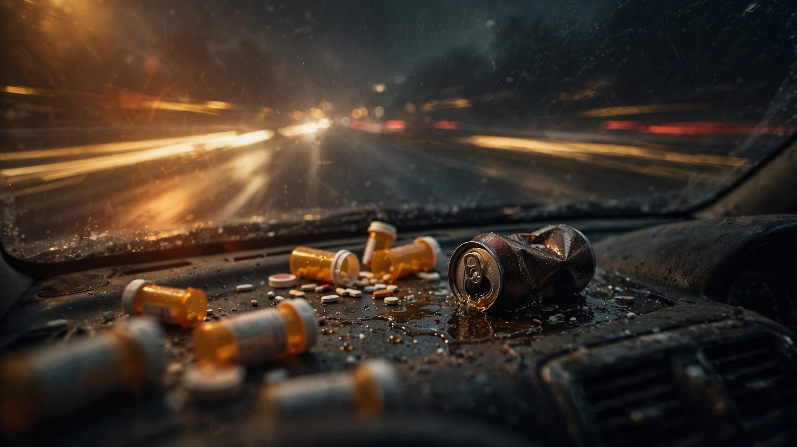

One in Five Fatal Crashes Now Involves Alcohol AND Drugs. The Fraction Is Accelerating.

Columbia University researchers pulled toxicology records for 60,741 drivers who died within one hour of a motor vehicle crash between 2018 and 2022. Not drivers who tested positive for one thing. Drivers who had a blood alcohol concentration at or above 0.08 AND tested positive for at least one non-alcohol drug. Both at once, in a dead body, behind a steering wheel.[1]
In 2018, that rate was 14.9 percent. By 2022, it was 18.8 percent. The adjusted odds of being polysubstance-impaired rose 15 percent in 2019, 25 percent in 2020, 32 percent in 2021, and 38 percent in 2022. Each year worse than the one before. No plateau, no reversal, no sign that the trend has noticed anyone is watching.
Cannabis was the most frequently detected non-alcohol drug at 25 percent. Stimulants, predominantly methamphetamine and cocaine, accounted for 19.2 percent. Narcotics including fentanyl represented 8.3 percent. Nighttime was the accelerant: drivers killed between 7 PM and 6 AM were 2.94 times as likely to be polysubstance-impaired as those who died during the day.
FARS data from 2014 to 2023 adds one dimension the Columbia study didn't chase: the vehicle. Across 490,736 drivers in fatal crashes with toxicology data, sports cars carry the highest class-level overlap between alcohol and drug impairment at 9.5 percent drug-positive and 17.1 percent alcohol-positive. Sedans and pickups cluster near 15 percent alcohol, 9 percent drugs.[2] The gap between vehicle classes is narrow. Polysubstance driving is not a demographic or a vehicle type. It is a behavior distributed across the fleet.
At the model level, the Buick Park Avenue leads vehicles with at least 200 fatal-crash drivers: 24.3 percent alcohol-positive, 16.6 percent drug-positive. A quarter of Park Avenue drivers who died in crashes were legally drunk. One in six also had drugs in their blood.
The Columbia study's trend line coincides exactly with the post-pandemic fatality surge that NHTSA attributed to "speeding and impaired driving." Nobody disaggregated the impairment into its components. The fastest-growing slice was the group doing both at once, and it took until 2026 for someone to run the query on NHTSA's own database.
A Johns Hopkins study published in May found that cannabis edibles combined with even low alcohol doses produced driving impairment comparable to the legal BAC limit, but standard field sobriety tests frequently missed the cannabis component.[3] Enforcement catches one leg of the cocktail and ignores the other.
The Best Case Against Panic
Toxicology testing coverage improved significantly over the study period. More jurisdictions tested for more drug classes in 2022 than in 2018. Some fraction of the 14.9-to-18.8 climb could be better detection, not more polysubstance driving. The Columbia researchers controlled for this with logistic regression, but the adjustment rests on assumptions about how much testing improved and where. Cannabis legalization in additional states also inflates the denominator: THC metabolites persist in blood for weeks after last use, so a positive test does not prove the driver was stoned at impact. The study measured presence, not active impairment.
What The Data Cannot Tell You
FARS captures fatal crashes only. The 60,741 dead drivers are a fraction of the roughly 6.7 million annual crashes in the United States. Vehicles with high polysubstance rates in fatal crashes may look different in the much larger pool of non-fatal wrecks. Our FARS toxicology data covers 2014 to 2023, a wider window than the Columbia study's 2018 to 2022, so the vehicle-level cross-reference is not a direct overlay. And not all jurisdictions test every dead driver for every drug class, which almost certainly underestimates true polysubstance prevalence.
What To Do With This
If you take any medication or use any substance and also drink, the combined impairment is worse than either alone. The Johns Hopkins data says standard field sobriety tests miss the cannabis component, which means enforcement will not save you from the physics. Late-night driving carries 2.94 times the polysubstance risk of daytime. Ride-share exists. Use it. If you are buying a used vehicle, run the VIN at nhtsa.gov/recalls. It will not tell you about the previous owner's Saturday nights, but it will tell you whether the airbags work.
Sources & References
- Mathews JN, Chihuri S, Li G, “Polysubstance impairment detected in fatally injured drivers, United States, 2018–2022,” Accident Analysis & Prevention, 231:108506, 2026. PMID 41846100. pubmed.ncbi.nlm.nih.gov
- NHTSA, Fatality Analysis Reporting System (FARS), 2014–2023 toxicology data. nhtsa.gov
- Spindle T, et al., Johns Hopkins University School of Medicine: combined cannabis edible and alcohol impairment study, May 2026. sciencedaily.com